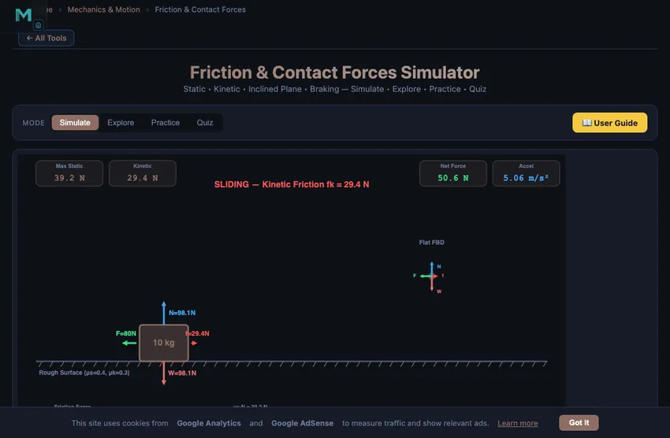

Friction & Contact Forces Simulator
Static • Kinetic • Inclined Plane • Braking — Simulate • Explore • Practice • Quiz
1 Overview
This free friction force calculator and interactive simulator lets you explore how static and kinetic friction behave on flat surfaces, inclined planes, and during braking. The tool draws real-time free body diagrams showing every force vector — applied force, normal force, weight, and friction — drawn to scale. You can adjust the coefficient of friction, mass, applied force, and surface angle to see how the net force and acceleration change instantly.
Designed for engineering students, physics learners, and mechanical engineering undergraduates, this simulator covers the essential friction topics tested in statics and dynamics courses: static versus kinetic friction, the friction equation F = μN, inclined plane force decomposition, the angle of repose, pulling at an angle, and braking distance calculations — all with interactive animations and no downloads required.
2 Setting the Scene
The simulator opens in Simulate mode with the Flat Surface scenario active. You will see a block on a surface with a free body diagram showing all force arrows. Six readout cards display Normal Force, Friction Force, Applied Force, Net Force, Acceleration, and Status (Static or Sliding).
Switch modes using the pill tabs at the top: Simulate for hands-on exploration, Explore for concept study, Practice for calculation drills, and Quiz for self-assessment. Surface presets (Ice, Wood, Rubber, Steel) let you quickly change friction coefficients to common material pairs.
3 Running the Demo
Choose a scenario using the Scenario pills: Flat Surface, Inclined Plane, Pulling at Angle, or Braking.
Flat Surface: Adjust mass (1–100 kg), applied force (0–500 N), static μs, and kinetic μk. The animation shows the block staying still when applied force is below the maximum static friction threshold, then transitioning to sliding when the threshold is exceeded. The status readout switches from “Static” to “Sliding.”
Inclined Plane: Set the incline angle (0–60°) and watch weight decomposition into components parallel and perpendicular to the surface. As you increase the angle past the angle of repose (θ where tanθ = μs), the block begins to slide.
Pulling at Angle: Toggle between Pull and Push modes. See how the vertical component of force changes the normal force — pulling upward reduces N and friction, while pushing downward increases both.
Braking: Set an initial speed and observe how the stopping distance depends on μ and speed. The formula d = v²/(2μg) is demonstrated visually.
4 Behind the Physics
Explore mode contains concept cards across three categories: Friction Types, Force Analysis, and Applications. Each card includes definitions, the relevant formula, a canvas diagram, and a worked numerical example.
Key topics include: static versus kinetic friction, the friction equation, normal force on inclines, angle of repose, optimal pulling angle (α = arctanμ), belt friction, braking distance, and real-world applications like brake systems and conveyor belts. This mode is ideal for exam revision or reinforcing lecture material.
5 Try a Problem
Practice mode generates unlimited random friction problems. Typical prompts include: “A 25 kg box sits on a surface with μs = 0.4. What is the maximum force before sliding?” Enter your numerical answer, press Check, and see the full step-by-step solution if incorrect. Your running score is tracked.
Quiz mode presents 5 randomised questions per session, mixing conceptual and numerical problems about friction types, force balance on inclines, and braking distance. Results and a per-question breakdown are shown at the end.
6 Things to Notice
- Use surface presets (Ice, Wood, Rubber, Steel) to quickly see how different materials affect friction force and motion.
- Watch the status card: It tells you exactly when the block transitions from static to kinetic friction, reinforcing the threshold concept.
- Inclined plane tip: Slowly increase the angle to find the exact angle of repose — verify it matches arctan(μs).
- Compare Pull vs Push: In the Pulling at Angle scenario, notice how pulling reduces normal force (and therefore friction) while pushing increases it.
- Braking scenario: Double the speed and observe the stopping distance quadruples — a critical safety concept.
- Works on tablets and mobile devices — use landscape orientation for the best view of the free body diagram.
Understanding Friction Forces — Free Interactive Simulator

Friction is one of the most fundamental contact forces in classical mechanics. It opposes the relative motion or tendency of motion between two surfaces in contact. This interactive simulator allows you to explore static friction, kinetic friction, inclined plane problems, pulling at an angle, and braking distance calculations in real time with animated free body diagrams.
Why It Takes a Big Push to Start, a Small One to Keep Going
This is the one piece of friction every student knows by feel, before they have ever seen the formula. Push a heavy box across a wooden floor. You strain, then suddenly it lurches. Once it is moving, the force you have to apply is noticeably less.
The physics is straightforward but the numbers surprise people. For wood on wood, μs ≈ 0.5 and μk ≈ 0.3. That is a 40 % drop in resisting force at the moment of sliding. For rubber on dry asphalt, μs ≈ 0.9 and μk ≈ 0.7 (a smaller drop, which is why anti-lock brakes work — they keep the tyre on the “static” side just under the threshold). For ice on steel, μk drops to about 0.03, which is why railway brakes need so much length.
A Worked Example — Sliding a 50 kg Crate
Take a 50 kg crate on a concrete floor. μs = 0.6, μk = 0.4. What force does it take to start moving the crate? What force keeps it moving at constant speed?
| Quantity | Working | Result |
|---|---|---|
| Weight | W = mg = 50 × 9.81 | 490.5 N |
| Normal force on level ground | N = W | 490.5 N |
| Force to just start moving | Fstart = μs·N = 0.6 × 490.5 | 294 N (about 30 kgf) |
| Force to keep moving (constant velocity) | Fkeep = μk·N = 0.4 × 490.5 | 196 N (about 20 kgf) |
| Force at 80 N applied (block still static) | fs matches the push, up to 294 N | 80 N (no motion yet) |
That last row catches students out. Static friction isn’t a fixed value — it is whatever is needed to prevent motion, up to its maximum. Push with 50 N, the friction is 50 N. Push with 200 N, friction is 200 N. Push with 295 N, it gives way and switches to kinetic 196 N. The simulator shows this transition by colouring the friction arrow differently in the two regimes.
Where Friction Formulas Get Things Wrong
The Coulomb friction model (f = μN) is a 17th-century approximation that survives because it is simple and accurate enough for most engineering work. It hides three real effects:
- Stick-slip oscillation. If μk drops with velocity (as it often does), a pushed block doesn’t slide smoothly — it sticks, lurches, sticks again. This is what makes door hinges squeak, chalk skitter on a board, and brakes shudder at low speeds.
- Velocity dependence. At very high speeds (hundreds of m/s), μk can drop sharply due to local melting at the contact patches. Aircraft anti-skid systems and high-speed train brake controllers compensate for this.
- Apparent area paradox. Coulomb’s law says friction doesn’t depend on contact area — surprising because we feel like a wider tyre grips better. The resolution is that real contact happens at tiny asperities; total real contact area scales with force, not with apparent area. The wider tyre matters for tyre wear and heat, not for μ.
Friction Coefficients Worth Remembering
| Surface pair | μs | μk | Where it matters |
|---|---|---|---|
| Rubber on dry asphalt | 0.9 | 0.7 | Vehicle braking distances |
| Rubber on wet asphalt | 0.6 | 0.5 | Why braking distance doubles in rain |
| Steel on steel (dry) | 0.74 | 0.57 | Machine slideways, before lubrication |
| Steel on steel (lubricated) | 0.16 | 0.06 | Bearing-fit slides, after oil |
| Wood on wood | 0.5 | 0.3 | Furniture moving, sliding doors |
| Ice on steel | 0.05 | 0.03 | Why railway brakes are so long |
| PTFE (Teflon) on steel | 0.04 | 0.04 | The reference low-friction pair |
Standards and References for Friction Data
- Hibbeler, R. C. — Engineering Mechanics: Statics, 14th ed., Chapter 8 (Friction).
- Bhushan, B. — Introduction to Tribology, 2nd ed., Wiley. The comprehensive treatment of friction, wear and lubrication.
- ISO 21879:2017 — Test methods for determination of friction-related properties for rolling element bearings.
Static vs. Kinetic Friction
Static friction prevents an object from starting to move. Its magnitude adjusts to match the applied force up to a maximum value of fs,max = μs · N, where μs is the static friction coefficient and N is the normal force. Once the applied force exceeds this threshold, the object begins to slide, and kinetic friction takes over with a constant value fk = μk · N. Kinetic friction is always less than the maximum static friction (μk < μs), which is why it takes more force to start an object moving than to keep it moving.
Friction on Inclined Planes
On an inclined plane at angle θ, the weight component along the plane is mg·sinθ while the normal force becomes N = mg·cosθ. The angle of repose is the critical angle at which the object is on the verge of sliding: tanθ = μs. This concept is essential in civil engineering for embankment design and in geotechnical engineering for slope stability analysis. Use the inclined plane scenario to visualise weight decomposition and see exactly when slipping begins.
Pulling at an Angle
When a force is applied at an angle α above the horizontal, it has both a horizontal component F·cosα that moves the object and a vertical component F·sinα that reduces the normal force. The effective normal force becomes N = mg − F·sinα, which reduces friction. There exists an optimal pulling angle that minimises the force needed to move the object, calculated as α = arctan(μ). This principle is used in ergonomic design and material handling.
Braking and Stopping Distance
When brakes are applied, friction decelerates the vehicle. The stopping distance depends on initial speed and friction coefficient: d = v² / (2μg). This explains why stopping distances increase dramatically on wet or icy roads. The braking scenario in this simulator lets you see how speed and surface conditions affect the distance required to stop, which is critical knowledge for automotive engineering and road safety design.
Applications in Engineering
Friction is central to many engineering applications: belt drives use friction to transmit power, brake systems convert kinetic energy to heat through friction, wedge mechanisms use friction for self-locking, and bearings are designed to minimise friction for efficiency. Understanding friction coefficients and contact force analysis is essential for any mechanical or civil engineer. Use the Explore mode to study 12 key friction concepts, Practice mode for random problem generation, and Quiz mode to test your mastery.
Explore Related Simulators
If you found this Friction simulator helpful, explore our Newton’s Laws simulator, Simple Machines simulator, Bearing Selection tool, Torque & Rotation simulator, and Free Body Diagram & Force Resolver.